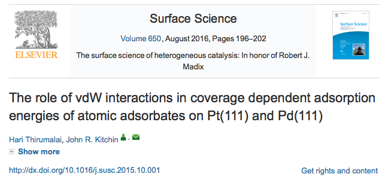

@article{thirumalai-2015-pt-pd, author = "Hari Thirumalai and John R. Kitchin", title = {The Role of Vdw Interactions in Coverage Dependent Adsorption Energies of Atomic Adsorbates on Pt(111) and Pd(111)}, journal = "Surface Science ", pages = " - ", year = 2015, doi = {10.1016/j.susc.2015.10.001}, url = "http://www.sciencedirect.com/science/article/pii/S0039602815003052", issn = "0039-6028", }
<div data-badge-details="right" data-badge-type="medium-donut" data-doi="10.1016/j.susc.2015.10.001" data-hide-no-mentions="true" class="altmetric-embed"></div>
<img src="http://api.elsevier.com/content/abstract/citation-count?doi=10.1016/j.susc.2015.10.001&httpAccept=image/jpeg&apiKey=5cd06d8a7df3de986bf3d0cd9971a47c"></img>
See it here: http://www.sciencedirect.com/science/article/pii/S0039602815003052.
Here is our manuscript archive: https://github.com/KitchinHUB/kitchingroup-60
The main goal of this page is to test run using a Twitter card to make better tweets about publications that lead back to pages with better information about the publication.
<a href="https://twitter.com/share" class="twitter-share-button" data-hashtags="publication" data-related="johnkitchin" data-show-count="false">Tweet</a><script async src="//platform.twitter.com/widgets.js" charset="utf-8"></script>
Tweeting that URL led to this tweet:
<blockquote class="twitter-tweet" data-lang="en"><p lang="en" dir="ltr">Test tweet with a twitter card: <a href="https://t.co/TagjgTgFmZ">https://t.co/TagjgTgFmZ</a></p>— John Kitchin (@johnkitchin) <a href="https://twitter.com/johnkitchin/status/769267071645540352">August 26, 2016</a></blockquote> <script async src="//platform.twitter.com/widgets.js" charset="utf-8"></script>